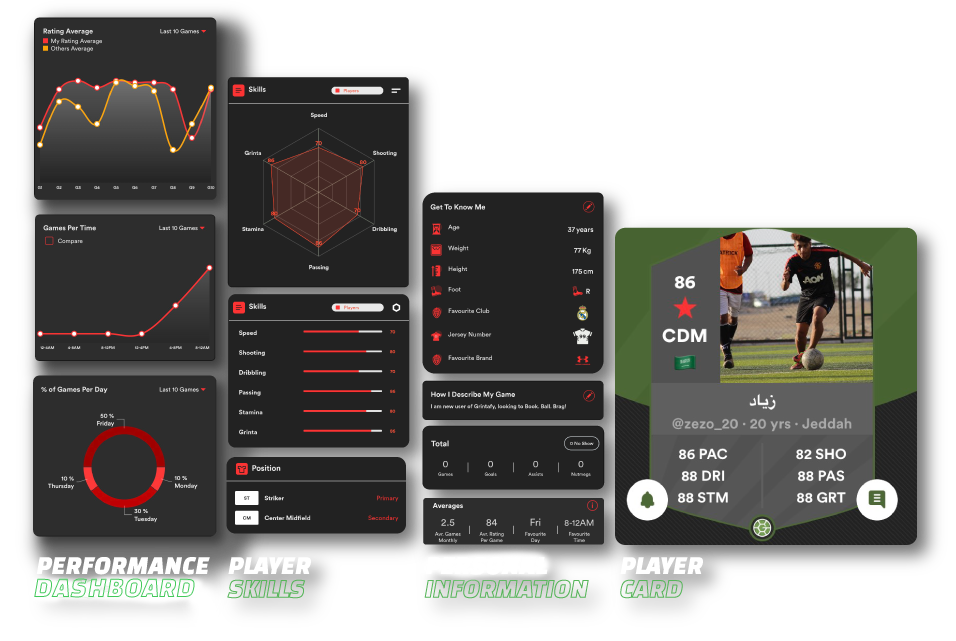

<div class="container">

  <div class="row">
    <div class="col-md-6 col-xs-12 ">
      <div class="foot-img"></div>
    </div>
    <div class="col-md-6 col-xs-12 ">
      <div class="foot-text">
        <h2>BUILD YOUR<br>
          <span class="storkeGreen" style="color: #000;">FOOTBALL CV</span>
        </h2>
        <p style="width:550px;    line-height: 1.3;">
          A brief football portfolio of a player’s performance, playing behavior, previous teams, videos, and
          information ready to be presented to scouts and clubs.
          <br>
          Talking about yourself has never been easier, share your profile username and let it talk for you instead.
        </p>
      </div>
    </div>
  </div>
</div>